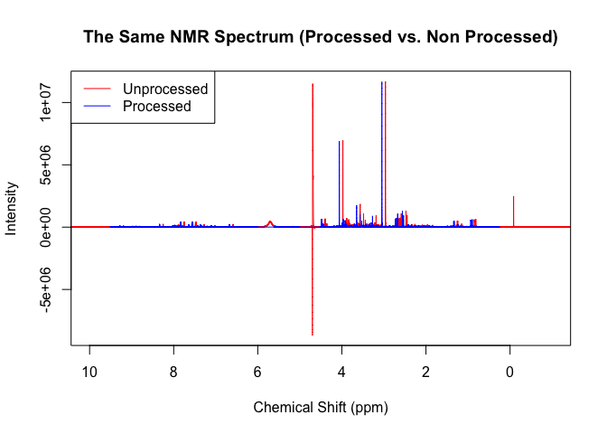
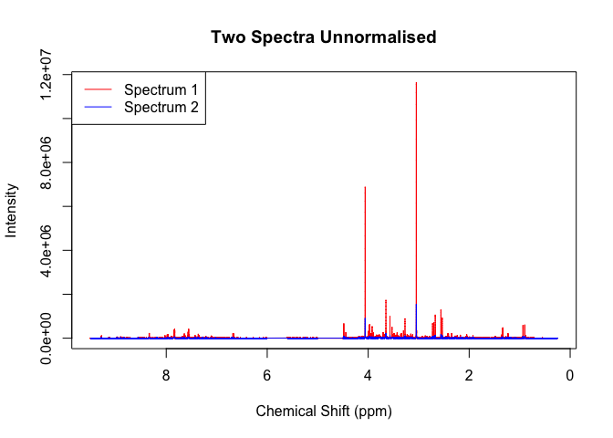
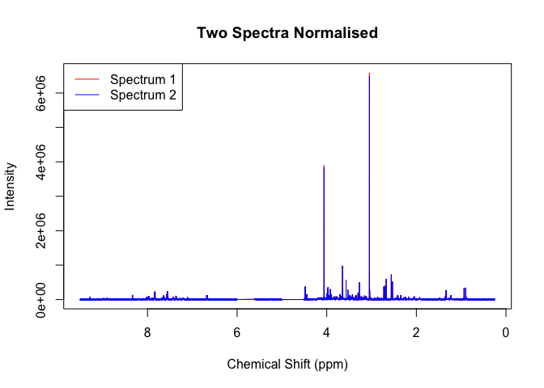

concentr8r is a collection of normalisation functions that are intended for magnetic resonance spectroscopy (MRS) spectra, more specifically that from nuclear magnetic resonance (NMR) and mass spectrometry (MS). Normalisation is a crucial yet context-depended aspect of analysing MRS data meaning that one method may work perfectly with one study but make the spectra in another study worse so having a diverse range of techniques available is useful.
concentr8r is currently only available on GitHub and can be sourced using the code below:
# install.packages("devtools")
devtools::install_github("kylebario/concentr8r")The intended use of concentr8r is to manipulate your NMR spectra so that they are as comparable as possible. This includes properly preprocessing the spectra, removing regions that are non-quantative, as well as correcting/flattening the baseline. It also includes normalising your spectra and removing the effects of dilution so that their concentrations are comparable.
Below is the code for the standard pipeline used to preprocess NMR spectra:
library(concentr8r)
read_in(path=system.file('extdata',package='concentr8r'),exp_type=list(exp=c("PROF_URINE_NOESY")), n_spec = 'multiple')
plot(ppm, X[2,], type = 'l', col = 'red', main = 'The Same NMR Spectrum (Processed vs. Non Processed)', xlab = 'Chemical Shift (ppm)', ylab = 'Intensity', xlim = c(10,-1))
preproc(X, ppm, meta, flip = TRUE, cali = TRUE, calib = 'tsp')
#> [0;34mFlipping the spectra... [0m[1;32mDone.
#> [0m[0;34mCalibrating to tsp... [1;32mDone.
#> [0m[0;34mChecking line width of spectra... [0m[1;32mAll spectra have linewidths under 1
#> [0m[0;34mRemoving non-quantative regions... [0m[1;32mDone.
#> [0m[0;34mPerforming baseline correction... [0m[1;32mDone.
#> [0m[0;34mCalculating Noise Estimations... [0m[1;32mDone.
#> [0m[0;34mChecking that X and meta rows match... [0m[1;32mDone.
#> [0m[0;34mChecking that ppm length and X columns match... [0m[1;32mDone.
#> [0m
points(ppm, X[2,], type = 'l', col = 'blue')
legend('topleft', legend = c("Unprocessed", "Processed"), col = c('red', 'blue'), lty = 1)
plot(ppm, X[2,], type = 'l', col = 'red', main = 'Two Spectra Unnormalised', xlab = 'Chemical Shift (ppm)', ylab = 'Intensity', xlim = c(9.5,0.25))
points(ppm, X[1,], type = 'l', col = 'blue')
legend('topleft', legend = c("Spectrum 1", "Spectrum 2"), col = c('red', 'blue'), lty = 1)
pqNorm(X, noi)
#> [0;34mPreparing Spectra and Reference...
#> [0m[0;34mSelecting ppm and Removing Noise... [0m[1;32mDone.
#> [0m[0;34mBinning... [0m[1;32mDone.
#> [0m[0;34mCalculating Reference Spectrum... [0m[1;32mDone.
#> [0;34mCalculating Dilfs... [0m[0;34mUsing the Mode... [0m[1;32mDone.
#> [0m[0;34mNormalising X... [0m[1;32mDone.
#> [0m
plot(ppm, X_pqn[2,], type = 'l', col = 'red', main = 'Two Spectra Normalised', xlab = 'Chemical Shift (ppm)', ylab = 'Intensity', xlim = c(9.5,0.25))
points(ppm, X_pqn[1,], type = 'l', col = 'blue')
legend('topleft', legend = c("Spectrum 1", "Spectrum 2"), col = c('red', 'blue'), lty = 1)
As you can see there are multiple stages in preprocessing, that build to producing highly comparable spectra which is made all the easier by concentr8r.